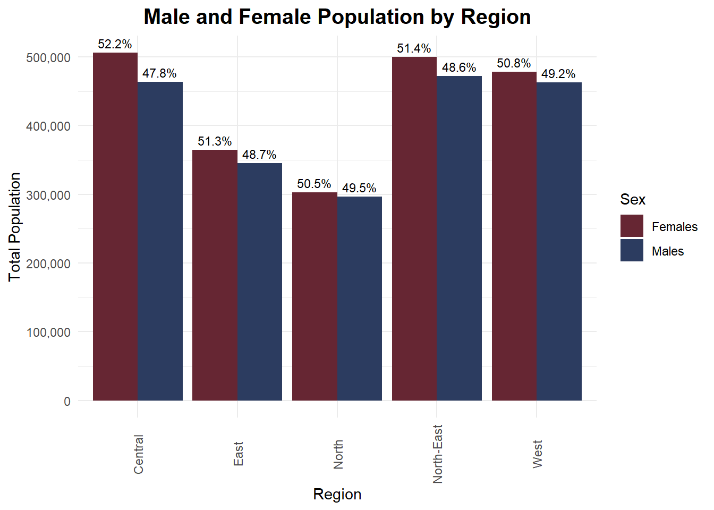
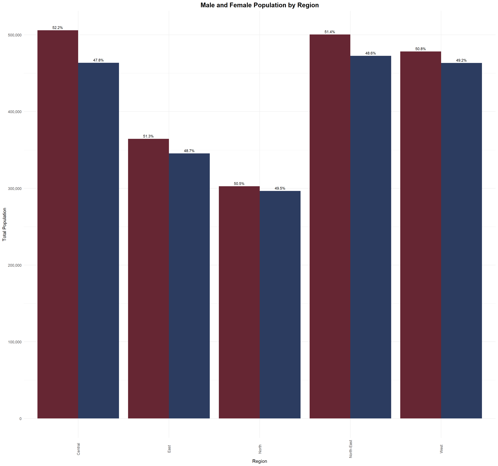
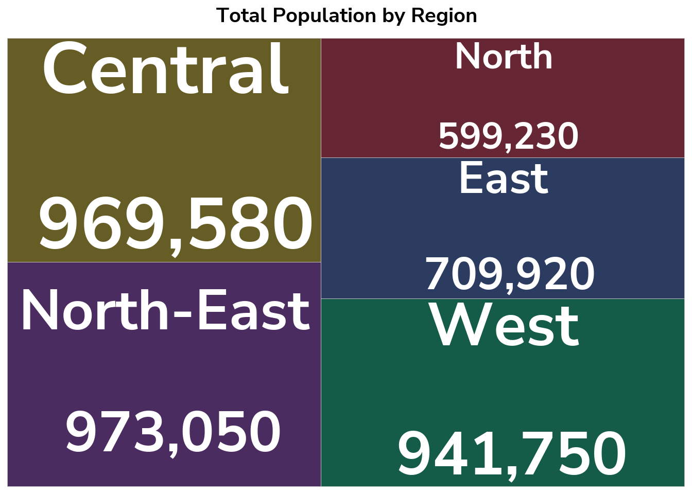
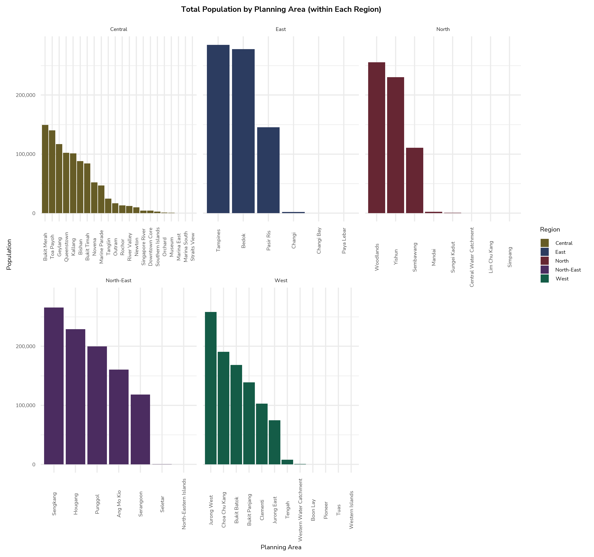

Code
pacman::p_load(tidyverse, haven,
ggrepel, ggthemes,
ggridges, ggdist,colorspace,ggdist,
patchwork, scales, ggplot2)Exploring Data Visualizations
May 1, 2025
May 4, 2025
Introduction & description of the dataset.
In this exercise, Exploratory Data Analysis (EDA) methods and ggplot functions are used to explore:
the variations of Age, sex, population between different planning areas and subzones
the distribution of Singapore overall population in terms of Age, sex, etc.
We load the following R packages using the pacman::p_load() function:
tidyverse: Core collection of R packages designed for data science
haven: To read in data formats such as SAS and SPSS
ggrepel: to provides geoms for ggplot2 to repel overlapping text labels
ggthemes: to use additional themes for ggplot2
patchwork: to prepare composite figure created using ggplot2
ggridges: to plot ridgeline plots
ggdist: for visualizations of distributions and uncertainty
scales: provides the internal scaling infrastructure used by ggplot2
Importing dataset
| PA | SZ | Age | Sex | Pop | Time |
|---|---|---|---|---|---|
| Ang Mo Kio | Ang Mo Kio Town Centre | 0 | Males | 10 | 2024 |
| Ang Mo Kio | Ang Mo Kio Town Centre | 0 | Females | 10 | 2024 |
| Ang Mo Kio | Ang Mo Kio Town Centre | 1 | Males | 10 | 2024 |
| Ang Mo Kio | Ang Mo Kio Town Centre | 1 | Females | 10 | 2024 |
| Ang Mo Kio | Ang Mo Kio Town Centre | 2 | Males | 10 | 2024 |
| Ang Mo Kio | Ang Mo Kio Town Centre | 2 | Females | 10 | 2024 |
We first take a look at the data, and check if there are any duplicate entries using glimpse.
Rows: 60,424
Columns: 6
$ PA <chr> "Ang Mo Kio", "Ang Mo Kio", "Ang Mo Kio", "Ang Mo Kio", "Ang Mo K…
$ SZ <chr> "Ang Mo Kio Town Centre", "Ang Mo Kio Town Centre", "Ang Mo Kio T…
$ Age <chr> "0", "0", "1", "1", "2", "2", "3", "3", "4", "4", "5", "5", "6", …
$ Sex <chr> "Males", "Females", "Males", "Females", "Males", "Females", "Male…
$ Pop <dbl> 10, 10, 10, 10, 10, 10, 10, 10, 30, 10, 20, 10, 20, 30, 30, 10, 3…
$ Time <dbl> 2024, 2024, 2024, 2024, 2024, 2024, 2024, 2024, 2024, 2024, 2024,…[1] "PA" "SZ" "Age" "Sex" "Pop" "Time" [1] "Name (English)" "Malay" "Chinese" "Pinyin"
[5] "Tamil" "Region" "Area (km2)" "Population"
[9] "Density (/km2)" "Subzones" Rows: 60,424
Columns: 15
$ PA <chr> "Ang Mo Kio", "Ang Mo Kio", "Ang Mo Kio", "Ang Mo Kio…
$ SZ <chr> "Ang Mo Kio Town Centre", "Ang Mo Kio Town Centre", "…
$ Age <chr> "0", "0", "1", "1", "2", "2", "3", "3", "4", "4", "5"…
$ Sex <chr> "Males", "Females", "Males", "Females", "Males", "Fem…
$ Pop <dbl> 10, 10, 10, 10, 10, 10, 10, 10, 30, 10, 20, 10, 20, 3…
$ Time <dbl> 2024, 2024, 2024, 2024, 2024, 2024, 2024, 2024, 2024,…
$ Malay <chr> NA, NA, NA, NA, NA, NA, NA, NA, NA, NA, NA, NA, NA, N…
$ Chinese <chr> "宏茂桥", "宏茂桥", "宏茂桥", "宏茂桥", "宏茂桥", "宏茂桥", "宏茂桥", "宏茂桥…
$ Pinyin <chr> "Hóngmàoqiáo", "Hóngmàoqiáo", "Hóngmàoqiáo", "Hóngmào…
$ Tamil <chr> "ஆங் மோ கியோ", "ஆங் மோ கியோ", "ஆங் மோ கியோ", "ஆங் மோ கியோ", "ஆங் மோ கியோ"…
$ Region <chr> "North-East", "North-East", "North-East", "North-East…
$ `Area (km2)` <dbl> 13.94, 13.94, 13.94, 13.94, 13.94, 13.94, 13.94, 13.9…
$ Population <chr> "161,000", "161,000", "161,000", "161,000", "161,000"…
$ `Density (/km2)` <chr> "13,400", "13,400", "13,400", "13,400", "13,400", "13…
$ Subzones <chr> "12", "12", "12", "12", "12", "12", "12", "12", "12",…# A tibble: 6 × 15
PA SZ Age Sex Pop Time Malay Chinese Pinyin Tamil Region
<chr> <chr> <chr> <chr> <dbl> <dbl> <chr> <chr> <chr> <chr> <chr>
1 Ang Mo Kio Ang Mo K… 0 Males 10 2024 <NA> 宏茂桥 Hóngm… ஆங் மோ… North…
2 Ang Mo Kio Ang Mo K… 0 Fema… 10 2024 <NA> 宏茂桥 Hóngm… ஆங் மோ… North…
3 Ang Mo Kio Ang Mo K… 1 Males 10 2024 <NA> 宏茂桥 Hóngm… ஆங் மோ… North…
4 Ang Mo Kio Ang Mo K… 1 Fema… 10 2024 <NA> 宏茂桥 Hóngm… ஆங் மோ… North…
5 Ang Mo Kio Ang Mo K… 2 Males 10 2024 <NA> 宏茂桥 Hóngm… ஆங் மோ… North…
6 Ang Mo Kio Ang Mo K… 2 Fema… 10 2024 <NA> 宏茂桥 Hóngm… ஆங் மோ… North…
# ℹ 4 more variables: `Area (km2)` <dbl>, Population <chr>,
# `Density (/km2)` <chr>, Subzones <chr>| PA | SZ | Age | Sex | Pop | Time | Malay | Chinese | Pinyin | Tamil | Region | Area (km2) | Population | Density (/km2) | Subzones |
|---|---|---|---|---|---|---|---|---|---|---|---|---|---|---|
| Ang Mo Kio | Ang Mo Kio Town Centre | 0 | Males | 10 | 2024 | NA | 宏茂桥 | Hóngmàoqiáo | ஆங் மோ கியோ | North-East | 13.94 | 161,000 | 13,400 | 12 |
| Ang Mo Kio | Ang Mo Kio Town Centre | 0 | Females | 10 | 2024 | NA | 宏茂桥 | Hóngmàoqiáo | ஆங் மோ கியோ | North-East | 13.94 | 161,000 | 13,400 | 12 |
| Ang Mo Kio | Ang Mo Kio Town Centre | 1 | Males | 10 | 2024 | NA | 宏茂桥 | Hóngmàoqiáo | ஆங் மோ கியோ | North-East | 13.94 | 161,000 | 13,400 | 12 |
| Ang Mo Kio | Ang Mo Kio Town Centre | 1 | Females | 10 | 2024 | NA | 宏茂桥 | Hóngmàoqiáo | ஆங் மோ கியோ | North-East | 13.94 | 161,000 | 13,400 | 12 |
| Ang Mo Kio | Ang Mo Kio Town Centre | 2 | Males | 10 | 2024 | NA | 宏茂桥 | Hóngmàoqiáo | ஆங் மோ கியோ | North-East | 13.94 | 161,000 | 13,400 | 12 |
| Ang Mo Kio | Ang Mo Kio Town Centre | 2 | Females | 10 | 2024 | NA | 宏茂桥 | Hóngmàoqiáo | ஆங் மோ கியோ | North-East | 13.94 | 161,000 | 13,400 | 12 |
Deleting
| PA | SZ | Age | Sex | Pop | Region |
|---|---|---|---|---|---|
| Ang Mo Kio | Ang Mo Kio Town Centre | 0 | Males | 10 | North-East |
| Ang Mo Kio | Ang Mo Kio Town Centre | 0 | Females | 10 | North-East |
| Ang Mo Kio | Ang Mo Kio Town Centre | 1 | Males | 10 | North-East |
| Ang Mo Kio | Ang Mo Kio Town Centre | 1 | Females | 10 | North-East |
| Ang Mo Kio | Ang Mo Kio Town Centre | 2 | Males | 10 | North-East |
| Ang Mo Kio | Ang Mo Kio Town Centre | 2 | Females | 10 | North-East |
Rows: 60,424
Columns: 6
$ PA <chr> "Ang Mo Kio", "Ang Mo Kio", "Ang Mo Kio", "Ang Mo Kio", "Ang Mo…
$ SZ <chr> "Ang Mo Kio Town Centre", "Ang Mo Kio Town Centre", "Ang Mo Kio…
$ Age <chr> "0", "0", "1", "1", "2", "2", "3", "3", "4", "4", "5", "5", "6"…
$ Sex <chr> "Males", "Females", "Males", "Females", "Males", "Females", "Ma…
$ Pop <dbl> 10, 10, 10, 10, 10, 10, 10, 10, 30, 10, 20, 10, 20, 30, 30, 10,…
$ Region <chr> "North-East", "North-East", "North-East", "North-East", "North-…Region-wise Age Distribution Using Multiple Density Plots
library(matrixStats)
respop_cleaned <- respop_cleaned %>%
mutate(
Age = as.character(Age),
Age = ifelse(Age == "90_and_Over", "90", Age),
Age = as.numeric(Age)
)
# Calculate mode (age with highest density) per region
mode_age <- respop_cleaned %>%
group_by(Region) %>%
group_split() %>%
map_df(~ {
d <- density(rep(.x$Age, .x$Pop))
data.frame(
Region = unique(.x$Region),
mode_age = d$x[which.max(d$y)]
)
})
# Plot with vertical mode lines
ggplot(respop_cleaned, aes(x = Age, weight = Pop, fill = Region)) +
geom_density(alpha = 0.6, adjust = 1) +
geom_vline(data = mode_age, aes(xintercept = mode_age), color = "black", linetype = "dashed", size = 0.8) +
geom_text(
data = mode_age,
mapping = aes(x = mode_age, y = 0, label = paste0("Peak: ", round(mode_age, 1))),
inherit.aes = FALSE,
angle = 90, vjust = -0.5, hjust = 1.1, size = 3
) +
facet_wrap(~ Region, scales = "free_y", ncol = 2) +
labs(
title = "Age Distribution by Region in Singapore (Weighted by Population)",
subtitle = "Dashed line indicates age with highest density (mode)",
x = "Age",
y = "Density"
) +
theme(legend.position = "none") +
theme_minimal(base_family = "nunito") + theme(legend.position = "none",axis.text.x = element_text(angle = 90, vjust = 0.5),plot.title = element_text(hjust = 0.5, size = 30, face = "bold", family = "nunito")) +
scale_fill_manual(values = c("West" = "#145C47", "East" = "#2C3C60", "North" = "#662633","North-East" = "#4B2C60","Central" = "#665C26"))
Gender Ratio Analysis by Region (Male-to-Female Ratio)
gender_summary_long <- respop_cleaned %>%
group_by(Region, Sex) %>%
summarise(Total_Pop = sum(Pop), .groups = "drop")
# Step 2: Calculate total population per region
gender_summary_long <- gender_summary_long %>%
group_by(Region) %>%
mutate(
Region_Total = sum(Total_Pop),
Percent = (Total_Pop / Region_Total) * 100
)
# Step 3: Plot side-by-side bars with percentage labels
ggplot(gender_summary_long, aes(x = Region, y = Total_Pop, fill = Sex)) +
geom_col(position = "dodge") +
geom_text(
aes(label = paste0(round(Percent, 1), "%")),
position = position_dodge(width = 0.9),
vjust = -0.5,
size = 3, family = "nunito"
) +
labs(
title = "Male and Female Population by Region",
x = "Region",
y = "Total Population"
) +
scale_y_continuous(labels = scales::comma) +
theme_minimal(base_family = "nunito") + theme(legend.position = "none",axis.text.x = element_text(angle = 90, vjust = 0.5),plot.title = element_text(hjust = 0.5, size = 15, face = "bold", family = "nunito")) +
scale_fill_manual(values = c("Females" = "#662633", "Males" = "#2C3C60"))
Total population by Region
library("treemapify")
library(showtext)
font_add_google(name = "Nunito Sans", family = "nunito")
showtext_auto()
# Summarize total population by region
region_summary <- respop_cleaned %>%
group_by(Region) %>%
summarise(Total_Pop = sum(Pop), .groups = "drop")
# Treemap
ggplot(region_summary, aes(area = Total_Pop, fill = Region, label = paste(Region, "\n", scales::comma(Total_Pop)))) +
geom_treemap() +
geom_treemap_text(colour = "white",family = "nunito",
place = "centre",
grow = TRUE,
size = 14,
fontface = "bold") +
labs(title = "Total Population by Region") +
theme_minimal(base_family = "nunito") + theme(legend.position = "none",axis.text.x = element_text(angle = 90, vjust = 0.5),plot.title = element_text(hjust = 0.5, size = 30, face = "bold", family = "nunito")) +
scale_fill_manual(values = c("West" = "#145C47", "East" = "#2C3C60", "North" = "#662633","North-East" = "#4B2C60","Central" = "#665C26"))
Population by Planning Areas
# Summarize total population by planning area for each region
planning_area_summary <- respop_cleaned %>%
group_by(Region, PA) %>%
summarise(Total_Pop = sum(Pop), .groups = "drop")
# Bar chart
ggplot(planning_area_summary, aes(x = reorder(PA, -Total_Pop), y = Total_Pop, fill = Region)) +
geom_col() +
facet_wrap(~ Region, scales = "free_x") +
labs(title = "Total Population by Planning Area (within Each Region)", x = "Planning Area", y = "Population") +
scale_y_continuous(labels = scales::comma) +
theme_minimal(base_family = "nunito",base_size = 25) +
theme(axis.text.x = element_text(angle = 90, vjust = 0.5),plot.title = element_text(hjust = 0.5, size = 30, face = "bold", family = "nunito")) +
scale_fill_manual(values = c("West" = "#145C47", "East" = "#2C3C60", "North" = "#662633","North-East" = "#4B2C60","Central" = "#665C26"))
---
title: "Take Home Exercise 1"
subtitle: "Exploring Data Visualizations"
format: html
date: 05/01/2025
date-format: long
date-modified: last-modified
editor: visual
execute:
eval: true
echo: true
warning: false
freeze: true
---
# 1.1 Setting the Scene
Introduction & description of the dataset.
# **1.2 Our task**
In this exercise, Exploratory Data Analysis (EDA) methods and ggplot functions are used to explore:
- the variations of Age, sex, population between different planning areas and subzones
- the distribution of Singapore overall population in terms of Age, sex, etc.
# 1.3 Let's get started!
## **1.3.1 Loading packages**
We load the following R packages using the `pacman::p_load()` function:
- **tidyverse**: Core collection of R packages designed for data science
- **haven**: To read in data formats such as SAS and SPSS
- **ggrepel**: to provides geoms for **ggplot2** to repel overlapping text labels
- **ggthemes**: to use additional themes for **ggplot2**
- **patchwork**: to prepare composite figure created using **ggplot2**
- **ggridges**: to plot ridgeline plots
- **ggdist**: for visualizations of distributions and uncertainty
- **scales**: provides the internal scaling infrastructure used by **ggplot2**
```{r}
pacman::p_load(tidyverse, haven,
ggrepel, ggthemes,
ggridges, ggdist,colorspace,ggdist,
patchwork, scales, ggplot2)
```
## 1.3.2 Importing Data
Importing dataset
```{r}
respopagesex2024 <- read_csv("respopagesex2024.csv")
show_col_types = FALSE
knitr::kable(head(respopagesex2024))
```
# 1.4 Data Pre-Processing
We first take a look at the data, and check if there are any duplicate entries using glimpse.
## 1.4.1 Glimpse
```{r}
glimpse(respopagesex2024)
```
## **1.4.2 Checking data structure**
## 1.4.3 Checking for duplicate values
```{r}
respopagesex2024[duplicated(respopagesex2024),]
```
## 1.4.4 **Checking for missing values**
## **1.4.5 Filtering data for selected variables**
```{r}
planning_areas <- read_csv("Planning_areas_of_Singapore_2.csv")
# Check column names
colnames(respopagesex2024)
colnames(planning_areas)
respop_with_region <- respopagesex2024 %>%
left_join(planning_areas, by = c("PA" = "Name (English)"))
# View result
glimpse(respop_with_region)
head(respop_with_region)
knitr::kable(head(respop_with_region))
```
Deleting
```{r}
respop_cleaned <- respop_with_region %>%
select(-`Time`, -`Malay`, -`Chinese`, -`Pinyin`, -`Tamil`, -`Area (km2)`, -`Population`, -`Density (/km2)`, -`Subzones`)
knitr::kable(head(respop_cleaned))
glimpse(respop_cleaned)
```
# 1.5 Exploratory Data Analysis (EDA)
Region-wise Age Distribution Using Multiple Density Plots
```{r, fig.width=14, fig.height=16}
library(matrixStats)
respop_cleaned <- respop_cleaned %>%
mutate(
Age = as.character(Age),
Age = ifelse(Age == "90_and_Over", "90", Age),
Age = as.numeric(Age)
)
# Calculate mode (age with highest density) per region
mode_age <- respop_cleaned %>%
group_by(Region) %>%
group_split() %>%
map_df(~ {
d <- density(rep(.x$Age, .x$Pop))
data.frame(
Region = unique(.x$Region),
mode_age = d$x[which.max(d$y)]
)
})
# Plot with vertical mode lines
ggplot(respop_cleaned, aes(x = Age, weight = Pop, fill = Region)) +
geom_density(alpha = 0.6, adjust = 1) +
geom_vline(data = mode_age, aes(xintercept = mode_age), color = "black", linetype = "dashed", size = 0.8) +
geom_text(
data = mode_age,
mapping = aes(x = mode_age, y = 0, label = paste0("Peak: ", round(mode_age, 1))),
inherit.aes = FALSE,
angle = 90, vjust = -0.5, hjust = 1.1, size = 3
) +
facet_wrap(~ Region, scales = "free_y", ncol = 2) +
labs(
title = "Age Distribution by Region in Singapore (Weighted by Population)",
subtitle = "Dashed line indicates age with highest density (mode)",
x = "Age",
y = "Density"
) +
theme(legend.position = "none") +
theme_minimal(base_family = "nunito") + theme(legend.position = "none",axis.text.x = element_text(angle = 90, vjust = 0.5),plot.title = element_text(hjust = 0.5, size = 30, face = "bold", family = "nunito")) +
scale_fill_manual(values = c("West" = "#145C47", "East" = "#2C3C60", "North" = "#662633","North-East" = "#4B2C60","Central" = "#665C26"))
```
Gender Ratio Analysis by Region (Male-to-Female Ratio)
```{r, fig.width=16, fig.height=15, echo=TRUE}
gender_summary_long <- respop_cleaned %>%
group_by(Region, Sex) %>%
summarise(Total_Pop = sum(Pop), .groups = "drop")
# Step 2: Calculate total population per region
gender_summary_long <- gender_summary_long %>%
group_by(Region) %>%
mutate(
Region_Total = sum(Total_Pop),
Percent = (Total_Pop / Region_Total) * 100
)
# Step 3: Plot side-by-side bars with percentage labels
ggplot(gender_summary_long, aes(x = Region, y = Total_Pop, fill = Sex)) +
geom_col(position = "dodge") +
geom_text(
aes(label = paste0(round(Percent, 1), "%")),
position = position_dodge(width = 0.9),
vjust = -0.5,
size = 3, family = "nunito"
) +
labs(
title = "Male and Female Population by Region",
x = "Region",
y = "Total Population"
) +
scale_y_continuous(labels = scales::comma) +
theme_minimal(base_family = "nunito") + theme(legend.position = "none",axis.text.x = element_text(angle = 90, vjust = 0.5),plot.title = element_text(hjust = 0.5, size = 15, face = "bold", family = "nunito")) +
scale_fill_manual(values = c("Females" = "#662633", "Males" = "#2C3C60"))
```
Total population by Region
```{r}
library("treemapify")
library(showtext)
font_add_google(name = "Nunito Sans", family = "nunito")
showtext_auto()
# Summarize total population by region
region_summary <- respop_cleaned %>%
group_by(Region) %>%
summarise(Total_Pop = sum(Pop), .groups = "drop")
# Treemap
ggplot(region_summary, aes(area = Total_Pop, fill = Region, label = paste(Region, "\n", scales::comma(Total_Pop)))) +
geom_treemap() +
geom_treemap_text(colour = "white",family = "nunito",
place = "centre",
grow = TRUE,
size = 14,
fontface = "bold") +
labs(title = "Total Population by Region") +
theme_minimal(base_family = "nunito") + theme(legend.position = "none",axis.text.x = element_text(angle = 90, vjust = 0.5),plot.title = element_text(hjust = 0.5, size = 30, face = "bold", family = "nunito")) +
scale_fill_manual(values = c("West" = "#145C47", "East" = "#2C3C60", "North" = "#662633","North-East" = "#4B2C60","Central" = "#665C26"))
```
Population by Planning Areas
```{r, fig.width=16, fig.height=15, echo=TRUE}
# Summarize total population by planning area for each region
planning_area_summary <- respop_cleaned %>%
group_by(Region, PA) %>%
summarise(Total_Pop = sum(Pop), .groups = "drop")
# Bar chart
ggplot(planning_area_summary, aes(x = reorder(PA, -Total_Pop), y = Total_Pop, fill = Region)) +
geom_col() +
facet_wrap(~ Region, scales = "free_x") +
labs(title = "Total Population by Planning Area (within Each Region)", x = "Planning Area", y = "Population") +
scale_y_continuous(labels = scales::comma) +
theme_minimal(base_family = "nunito",base_size = 25) +
theme(axis.text.x = element_text(angle = 90, vjust = 0.5),plot.title = element_text(hjust = 0.5, size = 30, face = "bold", family = "nunito")) +
scale_fill_manual(values = c("West" = "#145C47", "East" = "#2C3C60", "North" = "#662633","North-East" = "#4B2C60","Central" = "#665C26"))
```
# 1.? References